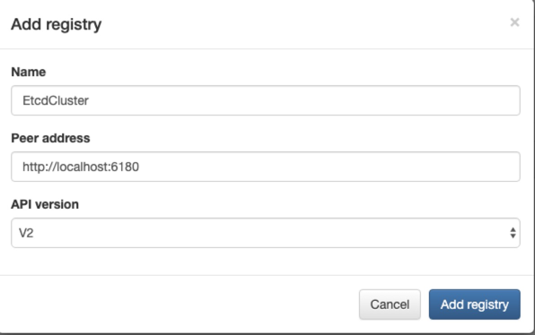
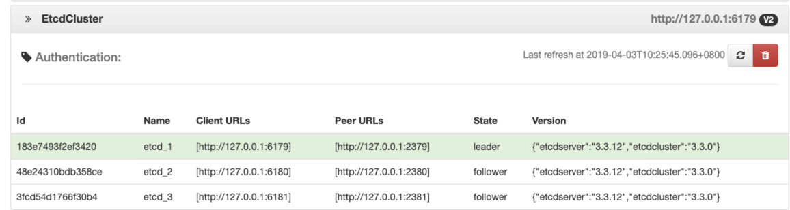

Etcd本地集群搭建
由于Zero容器使用了Etcd作为微服务的注册中心，最终Api Gateway会连接Etcd集群来完成请求转发，所以本文介绍如何在本机搭建一个Etcd本地化的集群（三个节点的伪集群），也可直接参考：https://github.com/etcd-io/etcd/releases。
1. 安装
如果是搭建本地的Etcd集群，有两种模式：
- 若要以Docker方式运行，则考虑使用：https://github.com/soyking/e3w完成一建式部署。
- 如果是在本机运行，则需要先安装 Etcd，保证
etcd命令可用。
Mac OS中安装etcd想对简单，直接使用：
brew install etcd直接在Etcd的Github地址中下载Windows版本的etcd：https://github.com/etcd-io/etcd/releases，然后将解压过后的etcd.exe配置到环境变量PATH中，保证etcd的命令可用即可。
2. 配置
2.1. 数据目录
在自己的本机搭建不同节点的数据目录：
Node1：/Users/lang/Runtime/data/etcd/node1/*
Node2：/Users/lang/Runtime/data/etcd/node2/*
Node3：/Users/lang/Runtime/data/etcd/node3/*2.2. 书写启动脚本
为了方便读者区分，将启动脚本分开呈现：
node1.sh：
#!/usr/bin/env bash
export ETCDCTL_API=3
rm -rf /Users/lang/Runtime/data/etcd/node1/* # 开发模式专用
etcd --config-file ./tool/etcd3-cluster/etcd-1.ymlnode2.sh：
#!/usr/bin/env bash
export ETCDCTL_API=3
rm -rf /Users/lang/Runtime/data/etcd/node2/* # 开发模式专用
etcd --config-file ./tool/etcd3-cluster/etcd-2.ymlnode3.sh
#!/usr/bin/env bash
export ETCDCTL_API=3
rm -rf /Users/lang/Runtime/data/etcd/node3/* # 开发模式专用
etcd --config-file ./tool/etcd3-cluster/etcd-3.yml上述启动脚本不需要过多说明，由于使用的是开发模式，所以会在启动的时候删除三个数据目录，真正的使用模式下可以去掉上述注释的开发模式专用的行。
2.3. 配置文件
接下来看看三个配置文件：
etcd-1.yml
name: etcd_1
data-dir: /Users/lang/Runtime/data/etcd/node1
listen-client-urls: http://127.0.0.1:6179
advertise-client-urls: http://127.0.0.1:6179
listen-peer-urls: http://127.0.0.1:2379
initial-advertise-peer-urls: http://127.0.0.1:2379
initial-cluster: etcd_1=http://127.0.0.1:2379,etcd_2=http://127.0.0.1:2380,etcd_3=http://127.0.0.1:2381
initial-cluster-token: etcd-cluster-token
initial-cluster-state: newetcd-2.yml
name: etcd_2
data-dir: /Users/lang/Runtime/data/etcd/node2
listen-client-urls: http://127.0.0.1:6180
advertise-client-urls: http://127.0.0.1:6180
listen-peer-urls: http://127.0.0.1:2380
initial-advertise-peer-urls: http://127.0.0.1:2380
initial-cluster: etcd_1=http://127.0.0.1:2379,etcd_2=http://127.0.0.1:2380,etcd_3=http://127.0.0.1:2381
initial-cluster-token: etcd-cluster-token
initial-cluster-state: newetcd-3.yml
name: etcd_3
data-dir: /Users/lang/Runtime/data/etcd/node3
listen-client-urls: http://127.0.0.1:6181
advertise-client-urls: http://127.0.0.1:6181
listen-peer-urls: http://127.0.0.1:2381
initial-advertise-peer-urls: http://127.0.0.1:2381
initial-cluster: etcd_1=http://127.0.0.1:2379,etcd_2=http://127.0.0.1:2380,etcd_3=http://127.0.0.1:2381
initial-cluster-token: etcd-cluster-token
initial-cluster-state: new上述配置中只需要注意：initial-cluster的值分别对应三个节点不同的信息即可。
3. 启动连接
3.1. 启动
先启动的节点会有下边日志输出：
2019-04-03 10:19:20.934870 I | raft: 183e7493f2ef3420 became candidate at term 6
2019-04-03 10:19:20.934882 I | raft: 183e7493f2ef3420 received MsgVoteResp from 183e7493f2ef3420 at term 6
2019-04-03 10:19:20.934892 I | raft: 183e7493f2ef3420 [logterm: 1, index: 3] sent MsgVote request to 3fcd54d1766f30b4 at term 6
2019-04-03 10:19:20.934900 I | raft: 183e7493f2ef3420 [logterm: 1, index: 3] sent MsgVote request to 48e24310bdb358ce at term 6
2019-04-03 10:19:20.943912 E | etcdserver: publish error: etcdserver: request timed out
2019-04-03 10:19:22.531767 I | raft: 183e7493f2ef3420 is starting a new election at term 6节点全部启动完成后可以看到：
2019-04-03 10:20:12.098868 N | etcdserver/membership: set the initial cluster version to 3.0
2019-04-03 10:20:12.098916 I | etcdserver/api: enabled capabilities for version 3.0
2019-04-03 10:20:12.107925 I | etcdserver: published {Name:etcd_3 ClientURLs:[http://127.0.0.1:6181]} to cluster a1ffaa67ef23959d
2019-04-03 10:20:12.107947 I | embed: ready to serve client requests
2019-04-03 10:20:12.108448 N | embed: serving insecure client requests on 127.0.0.1:6181, this is strongly discouraged!
2019-04-03 10:20:12.135082 I | etcdserver: 3fcd54d1766f30b4 initialzed peer connection; fast-forwarding 8 ticks (election ticks 10) with 2 active peer(s)
2019-04-03 10:20:12.412819 N | etcdserver/membership: updated the cluster version from 3.0 to 3.3
2019-04-03 10:20:12.412930 I | etcdserver/api: enabled capabilities for version 3.3然后就可以直接连接了。
3.2. 连接
连接可以使用工具：https://github.com/nikfoundas/etcd-viewer，连接教程直接参考官方链接即可，这样一个本地的Etcd集群就搭建好了。
git clone https://github.com/nikfoundas/etcd-viewer.git然后进入目录直接使用：
mvn jetty:run然后打开：http://localhost:8080，并且添加一个新的Registry：

最后刷新就可以查看了：
